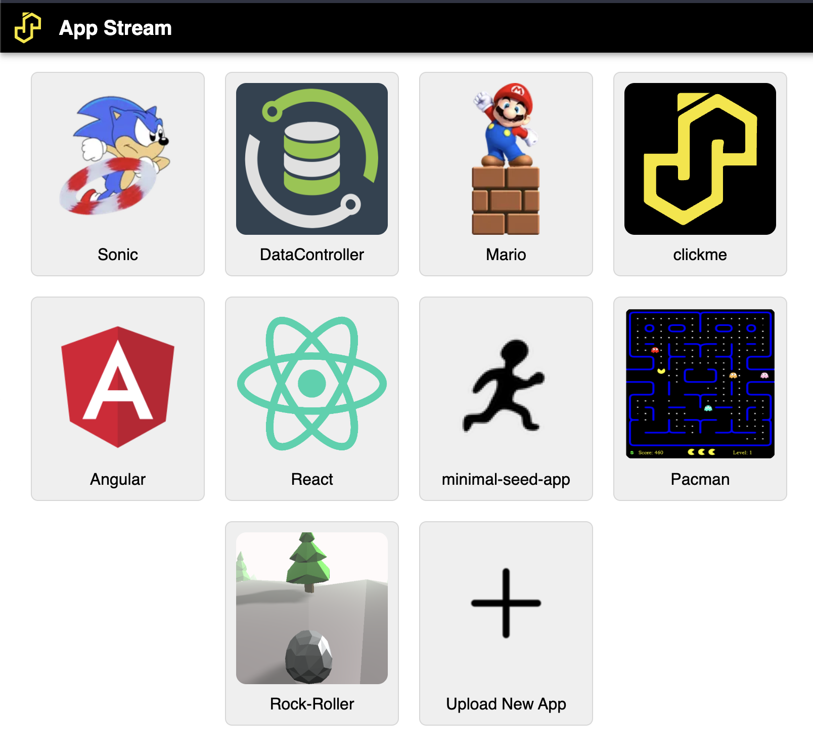

App Stream¶
AppStream is the gateway to apps on SASjs Server.

Creating Apps¶
Anybody can create an app for SASjs Server - it just needs to be compiled using the SASjs CLI. The output of this process is a zip file that can be imported to any SASjs Server instance.
Deploying Apps¶
Simply click the "Upload New App" button and select the local zip file containing the app you wish to deploy.
Alternative deployment approaches include:
sasjs deploy- https://cli.sasjs.io/deploy/- Use the
/SASjsApi/drive/deploy/uploadAPI - Use the
/SASjsApi/drive/deployAPI
Deployment limits¶
A deploy is measured before anything is written, and refused with 413 when the tree is over any of these:
| Limit | Value |
|---|---|
| Entries | 10,000, folders included |
| Total size | 100 MB, decoded |
| A single file | 20 MB |
The refusal names the limit and the figure it reached, for example The file tree exceeds the deploy limit: 10001 entries (maximum 10000). Nothing is written before the checks pass, so a refused deploy leaves the drive exactly as it was.
Sizes are decoded bytes. A file member's contents travel as base64 - four characters for every three bytes - so a tree at the total limit is up to a third larger on the wire than on the drive, and the transport admits that much. POST /SASjsApi/drive/deploy/upload applies the same limits to the tree it unpacks from the archive, not to the archive itself.
Member names are checked in the same pass: a name carrying /, \ or .. would write outside the deployment folder, so the tree is refused with 400 instead.
Securing Apps¶
If you are running in "Server" mode you can grant permissions at the level of User or Group to any uploaded application - just click on your username, then "Settings", then "Permissions", to create the necessary rule(s).
Available Apps¶
SASjs Server does not have an in-built "app store" (due to our security policy of having no external web requests), however you may download apps yourself from the following locations and upload them to your SASjs Server instance.
Productivity Apps¶
Data Controller for SAS®¶
Data Controller is a full-blown SAS application to provide business users with a carefully-controlled capability to make changes to data in SAS.
The app can be downloaded from here: https://git.4gl.io/dc/deploy/raw/branch/main/server.json.zip.
Documentation is here: https://docs.datacontroller.io.
Seed Apps¶
The following apps are presented as "starter packs" with which you can build your own SASjs App:
Angular Seed App¶
A demo app built using Angular. Builds are published to the releases page.
Minimal Seed App¶
This is a simple demo app built with Vanilla JS and SAS. You can find the latest version on the github releases page
React Seed App¶
The primary template used by the SAS Apps team. Artefacts available on the releases page.
Games¶
The serious part of the game series is that you can see how easy it is to deploy generic web apps to SASjs Server - or any SAS server for that matter!
Macro Dash¶
Bounce through the WORK library, stomp the ERRORs and get the report out before the job runs out of steam. The leaderboard is a set of SAS services, so the game shows the full backend - not just a streamed frontend. Play it at https://dash.sasjs.io; the SASjs Server service pack and the Viya deploy script are on the releases page.
Mario¶
Needs no introduction. Release assets available here: https://github.com/sasjs/mario/releases
Pacman¶
Another video game classic! Release assets are available here: https://github.com/sasjs/pacman/releases
Rock Roller¶
Dodge the trees and move down the slope! Release assets are available here: https://github.com/sasjs/rockroller/releases.